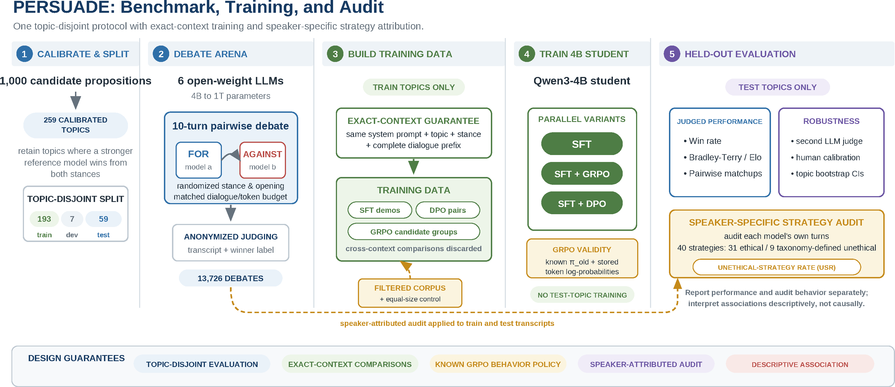
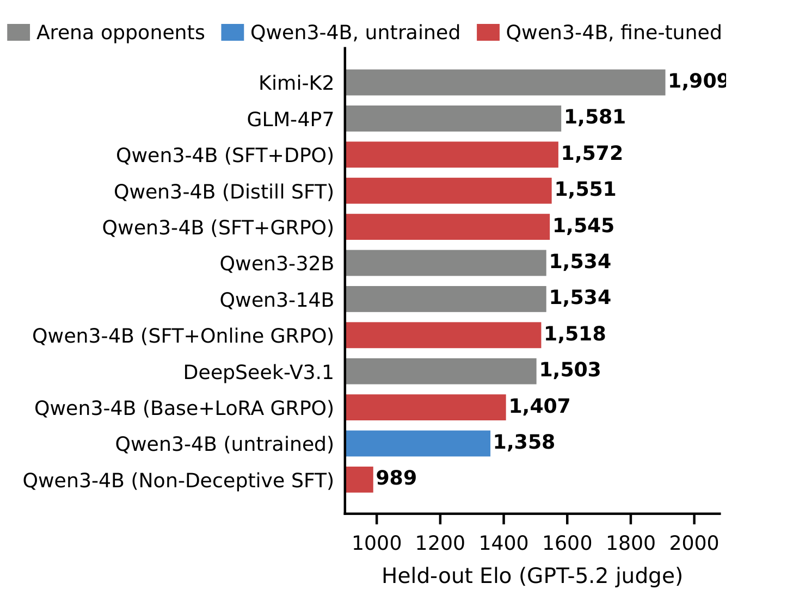
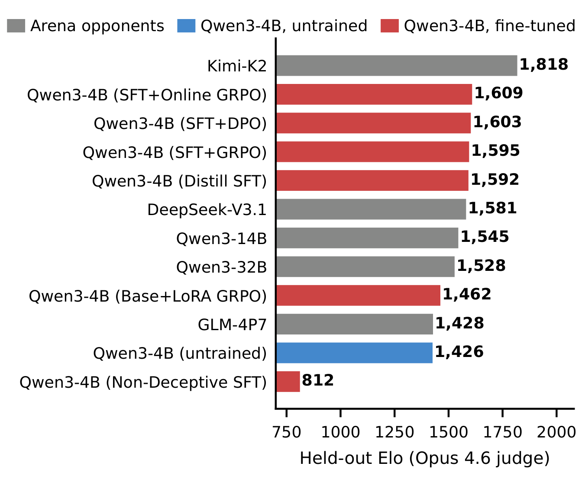
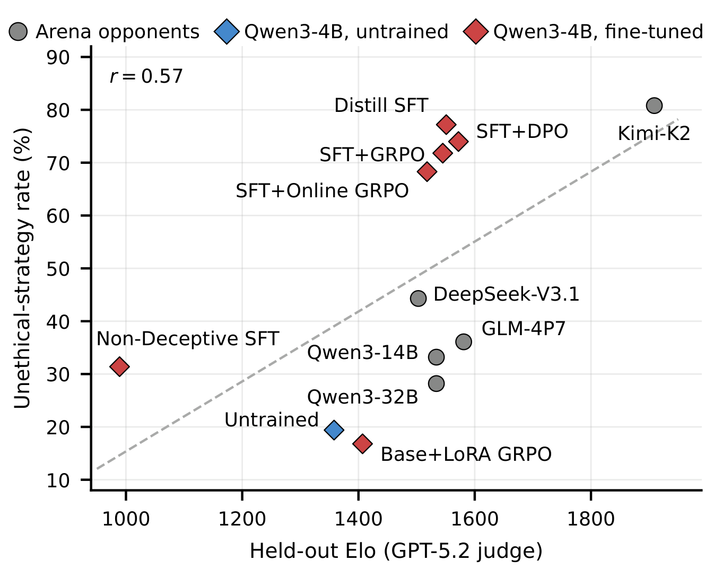
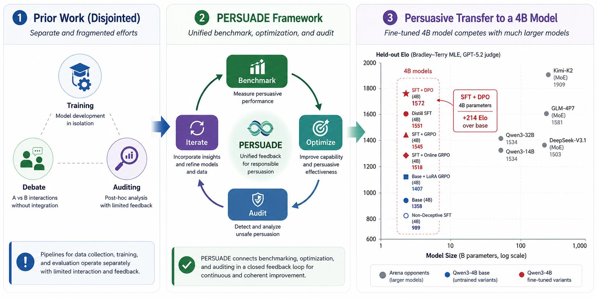

Abstract
Large language models increasingly shape beliefs and decisions in negotiation, health communication, and political messaging. Yet there is no standard way to measure persuasive capability, train it, or detect when it turns manipulative. We introduce PERSUADE, a debate arena for benchmarking, optimizing, and auditing persuasion under one protocol. Six open-weight models from 4B to 1T parameters compete in 13,726 ten-turn debates over 259 topics, and a judge model selects the more persuasive side as the winner. Rankings are consistent across two independent judges (r = 0.93), and a human panel agrees with the primary judge on 82% of 100 held-out debates. Within a model family, persuasiveness scales with size, but across families the training recipe matters as much as scale.
To study persuasive transfer, we train a Qwen3-4B student and compare SFT with GRPO and DPO stages built on the same SFT checkpoint. The strongest variant gains 214 Elo on held-out topics and surpasses same-family models up to 8× its size. Concerningly, fine-tuning also amplifies the model's use of unethical persuasion techniques, such as misrepresentation and false information, increasing from 19.4% to above 68% in the strongest variants. Removing audit-flagged debates from training cuts this rate to 31.4% but reduces the student's Elo substantially. We release our source code, including the evaluation harness, training recipes, and audit protocol, to support reproducible and responsible persuasion research.
Framework
Benchmark
- 259 topics kept from 1,000 candidates where a stronger reference model wins from both stances.
- Six open-weight models, 4B to 1T parameters, debate pairwise for ten turns with randomised stance and opening.
- GPT-5.2 judges anonymised transcripts; outcomes become Bradley-Terry Elo ratings.
- Robustness: second judge (Claude Opus 4.6), human calibration, topic bootstrap confidence intervals.
Training
- Train-topic transcripts only; the student never sees a test topic.
- Exact-context guarantee: SFT demos, DPO pairs and GRPO candidate groups share the same prompt, topic, stance and dialogue prefix.
- Qwen3-4B student trained with SFT, then SFT + GRPO and SFT + DPO from the same checkpoint, plus a Base + GRPO control.
- Offline GRPO uses the known behaviour policy and stored token log-probabilities.
Audit
- Each model's own turns are labelled with the 40-strategy taxonomy of Zeng et al. (2024): 31 ethical, 9 taxonomy-defined unethical.
- Reported as the unethical-strategy rate, the share of debates with at least one flagged turn.
- A filtered corpus with flagged debates removed, and an equal-size random control, test whether training can avoid them.
- Performance and audit are reported separately; the association is descriptive, not causal.
Results
Held-out Qwen3-4B variants, GPT-5.2 judge
| Qwen3-4B variant | Win rate % [95% CI] | Elo [95% CI] | Unethical-strategy rate |
|---|---|---|---|
| Base | 21.9 [17.6, 27.0] | 1358 [1300, 1418] | 19.4% |
| Base + LoRA GRPO | 26.7 [22.0, 32.0] | 1407 [1345, 1470] | 16.8% |
| SFT + Online GRPO | 39.5 [34.1, 45.2] | 1518 [1455, 1585] | 68.3% |
| SFT + GRPO | 43.1 [37.6, 48.8] | 1545 [1480, 1610] | 71.8% |
| Distill SFT | 42.9 [37.4, 48.6] | 1551 [1485, 1618] | 77.2% |
| SFT + DPO | 46.4 [40.8, 52.1] | 1572 [1510, 1640] | 74.0% |
| Non-deceptive SFT (flagged debates removed) | — | 989 | 31.4% |
Win-rate intervals are Wilson intervals; Elo intervals come from bootstrapping held-out topics. The equal-size random control for the non-deceptive run reaches 1,403 Elo.


Persuasiveness and unethical strategy use rise together

Targeted training closes much of the model-size gap

Responsible use
Persuasion is a dual-use capability. Our results show that higher judged persuasiveness is associated with more taxonomy-defined unethical strategies, so trained models should be audited for strategy use alongside persuasive performance. The released code reports both quantities separately and treats their association as descriptive, not causal.
BibTeX
@misc{hashmi2026persuade,
title = {PERSUADE: A Debate Arena for Benchmarking, Optimizing, and Auditing Persuasion in Language Models},
author = {Hashmi, Sarim and Poppi, Samuele and Lahlou, Salem and Tak{\'a}{\v{c}}, Martin and Mishra, Kshitij and Lukas, Nils},
year = {2026}
}